Knowledge System¶
本文节选自此
为什么要搭建个人的知识体系？¶
为了有得选择，而选择会改变人生。
1.知识体系的构建广度决定着选择权。越广，选择余地越多，选择时可做比较也越多。
报考大学，因为家族亲朋老师的知识不足，大家都是洞井观天，让自己主动屏蔽了大量选择权。出来找工作时，选择什么行业，什么岗位，又很大的决定了你现在是什么样。往前一步是黄昏，退后一步是人生。早期每一步小的选择，都是人生的分支，选择不好，方向不对，时间越长，要拐过来的难度越大。我报学农业生物，刚刚工作出来做农业技术相关工作 1800元一个月，忙季一周三次以上脱鞋下田，面朝黄土背朝天，一干就是三年，中间因接触产品经理知识，得以转型，进入互联网，看到更宽广的世界。
2.知识体系的构建深度决定了也决定着选择权；越深，选择权越大，自已拥有主动权就越大。
“在每个时刻，所有节点有同样的机会被连接，结果导致那些先加入的节点拥有明显的优势。”，“因为这样的节点拥有最长的时间来收集链接。”——《链接》
当我进入互联网产品经理2年后，发现岗位即将饱和，于是选择更深一步的数据，最终脱开于众多PM们的竞争，自己可选择余地更多。
3.构建知识体系时间决定着选择权。越早，可供选择的多，被选择的可以性也越大。
种一棵树最好的时间是20年前，其次是现在。
要是你早10年在一线城市买了房，早5年选择做PM，早3年买了比特币......说简单点，要是我10年前练好吉它，至少现在也有门像样的爱好，但是我现在不练好，10年后的自己还是会想，2019年怎么没好好练好。所以现在和我一起健身、一起学习，余生还有几十年，一切还来得及。
4.构建知识体系的质量决定着选择权。越高，选择权越大，输入整理决定输出。
但质量的提升，要靠PDCA，要靠迭代，不要等到七老八十了，觉得自己终于准备好了再行动，那时恐怕时间无多，没多少改变的机会了。所以我从1.0版本做起，一步步通过实践、试错、整理、优化。
5.你的知识体系决定了你自己是谁。
我们在处理事情时，会调用知识体系从而做出选择，我们的每一次选择构成了现在的自己。构建不断迭代的知识体系意味着将自己的知识体系明确化，看透自己的优缺点，强化自己好的部分，优化自己不好的部分。
拥有良好的知识体系意味着你不再过着不懂选择，不想选择的混沌的生活。最直接的一点，你不在无效的碎片化阅读，外界给你推什么你就看什么，你会围绕自己的需求去有意识的收集你要的信息，化被动为主动。
什么是个人知识体系？¶
1.什么是知识？
一条陈述能称得上是知识必须满足三个条件，它一定是被验证过的，正确的，而且是被人们相信的，这也是科学与非科学的区分标准。——柏拉图
2.什么是知识体系？
我所认识的知识体系是同类相关标准知识的集合，它是有不同广度和深度的。
3.什么是个人的知识体系？
知识对目前的人类来说无穷尽的（未来会有云同步存储和极速处理辅助大脑时又是另外一番景象），正因如此，我们不得不根据自己的情况对知识体系的整理做优先级的判断，优先处理最适合自己生存和发展的信息，构建符合自己个人的知识体系。我做的可能会和大家有重叠，但不经思考整理的肯定不会是最适合自己的。
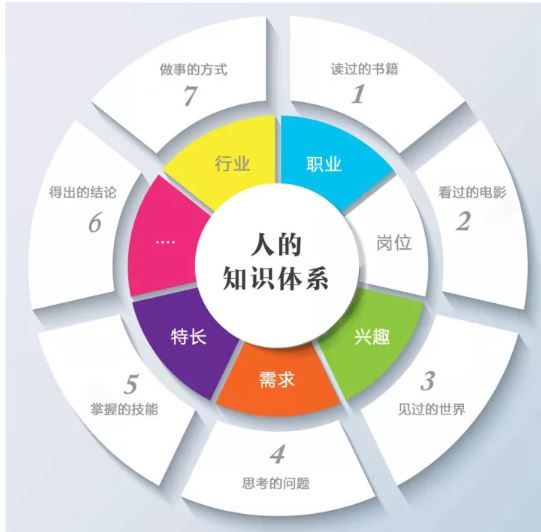
什么是知识体系的演化？¶
知识体系不是现成的，不是一蹴而就的，而是在我们生活的经历、处理问题中的积累慢慢演化形成的。

- 阅历
阅历就是信息和数据。
一手阅历：走万里路，经历人世百态。
二手阅历：阅万卷书（网页等信息），看他人走万里路，经历人世百态。
师朋交流：和朋友沟通，向老师学习，了解更多路径和试错经验，有一个好的老师，你想了解的知识，说不定他早已看过这些书、走过这些路，他把消化好的告诉你，等于你也看了那么多书，帮你过滤了岔路。
4.2 认识
认识就是有意识的从阅历中提取信息，记录在大脑里。若你出去旅游只是下车拍照、上车睡觉，回到家里啥都不知道，这算不上认知，看书也一样，这些认识都停留在内存的层面，关机一次，啥都忘了，要想办法从内存里存到硬盘。
4.3 认知
认知在过程上是就是把内存的信息存进硬盘。
认知是认识并实践，从实践中验证过，最后认同它，并让它成为自己的行为指导的知识。比如骑自行车，在没有学之前，听过很多人说要给它一个动力保持平衡以及往前走，就可以了，你也认识了这个道理，但是直到你实践跌倒了很多次，你才深刻认同大家所说的，原来这就是大家所说的随便脚用力向前就可以保持平衡走了，中间有大量的力量平衡的细节，他们都没告诉我们。
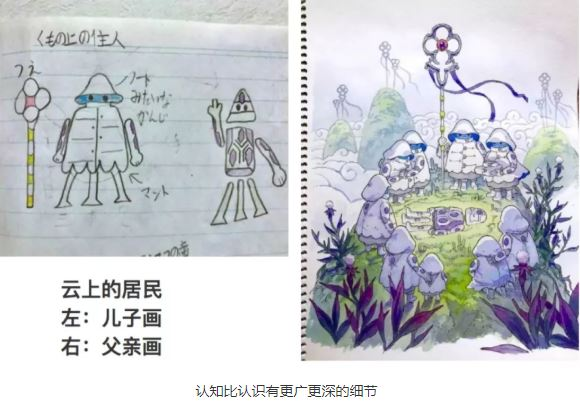
认知比认识有更广更深的细节
4.4 智慧
智慧：我认为智慧是一种能通过过多种结构化的认知组合成对行为选择做出最优解的能力，参考查理芒格的多元思维模型。简单说来，处理问题时，能判断各样情形，最后做出被证明是一个最佳的选择的能力，智慧不是知识，而是能力。那我们现在直接看古人上下几千的智慧有没有用？几乎没用，上面说了不经实践的知识不会成为你的认知，更不会成为你的智慧。
如何搭建个人的知识体系？¶
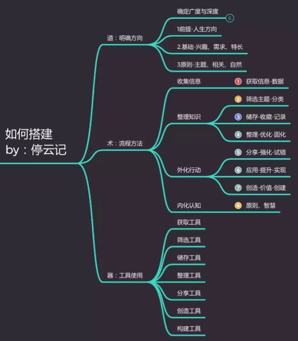
搭建自己的知识体系，核心明白三点：道法器。
道-核心在于做什么：目标方向、真理、价值观，核心理论。
法-核心是怎么做：方法、路径。
器-核心是高效的的工具。
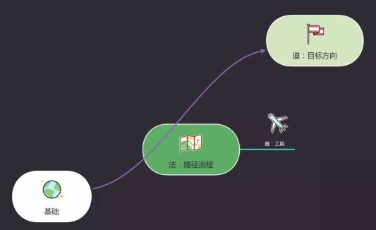
1.整理个人知识体系，先要明道
如果你不知道你要去哪里，那么现在你在哪里一点都不重要。只要你一直走，总会走到什么地方的。——《爱丽丝梦游仙境》同样，如果你不知道自己想做什么，要什么样的生活，走什么样的路其实对你无所谓。明道就是确定你想过什么样的生活和人生，同时基于我们的生活理念，明确价值观：什么是可以做，什么不能做，什么是一定要做。
先明确生活的定义：什么是生活？三岁小孩都知道：吃饭、睡觉、打豆豆。那么，成年人的生活就是学习，工作，事业，家庭，享受天伦之乐。简言之：生活就是人们或生物为了生存和发展所进行的一切活动——维基百科
明道，第一明的是自己要过什么样的生活，明确自己的人生方向。
a. 一种是有广度的生活，啥都懂些，成为生活行走的百科全书，如货郎、旅行家。
b. 一种是有深度的生活，专精某一领域，成为行业高手，如科学家，工程师。
任一种都无关对错好坏，选择只是因为我们的时间有限，必须做一定的平衡。
明道，第二明的是自己要用什么样的价值观面对生活。
如果做为个人，把自己的价值观明确后，有几点好处：
a. 通过人以群分，物以聚类的自然法则，找到自己志同道合，玩得来的朋友。
b. 同样的，公司也有价值观，我们自然可以找到符合自己的公司，比如你是诚信是你的原则，如果一家公司不讲诚信，你会各种别扭，最后留不下来的。
c. 最后，你做的事、你做的产品都赋予了你的价值观，这时才不是一个三不像的产品，没有灵魂的产品。
有了正确的值得坚守的价值观，人们会因为相信你、从而相信你做的事、相信你做的产品、你推荐的人。
明道，第三是要了解自己的基础，在什么样的位置。
每个人的基础（兴趣、需求、特长）都是不一样的，了解自己长处和短板，从自己的兴趣、需求、特长出发，才会充分的发挥自己的自驱力去达成自己的目标。
2.搭建自己的知识体系，有方法可循
知识体系横向看是广度、是结构；知识体系纵向看是深度、是层次；知识体系内外看是外化输入、内化输出。
知识体系横向: 按MECE的原则，可以按主题相关划分，后期慢慢丰富迭代：如左右脑相关性、工作学习家庭相关分类，如产品工作相关分类是用户体验、用户调研、市场分析、产品设计等等
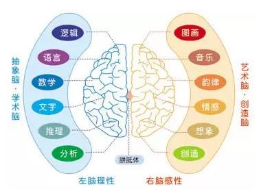
知识体系的纵向: 之前讲过知识从演化分：阅历（信息)-> 认识 ->认知->智慧，那如何行动一步步深化？
通过讨论、实践、教授给他人的方法，不断破妄。有个同学做大学老师，我问他，你教的课，你以前学过么？他说没有，那你是怎么能教的，他说：我其实就是在教之前，不断学啊，一开始也有学生问到我不会回答的，但是我回去研究了，最后都会的，其实啊，教学的过程中，真正学的好的是老师。主要因为是老师是主动学习的，学生是被动学习的。
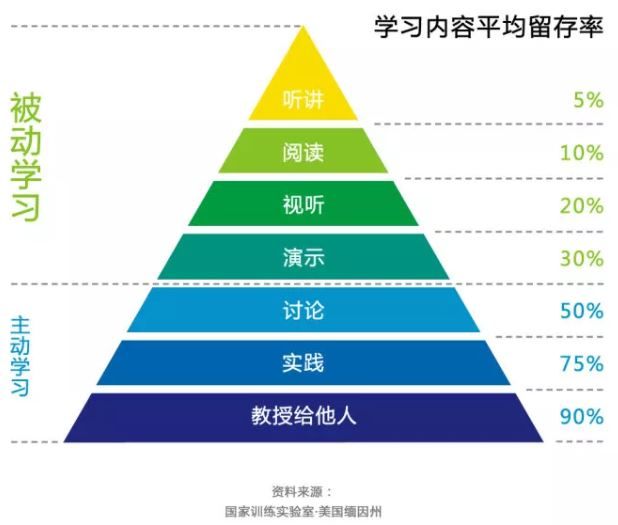
知识体系的内化流程
知识体系的内化，说的就是把外面的知识变成自己的知识，这个经过各位大佬的研究，做出一套流程方法论。如下图：
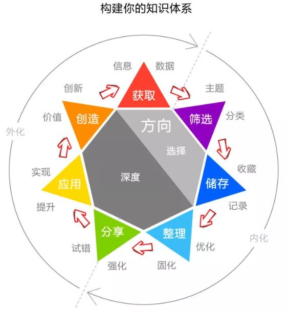
经过我的消化理解，我把我结合工具的应用，用计算机编出程序用来比喻整个内化学习的流程：
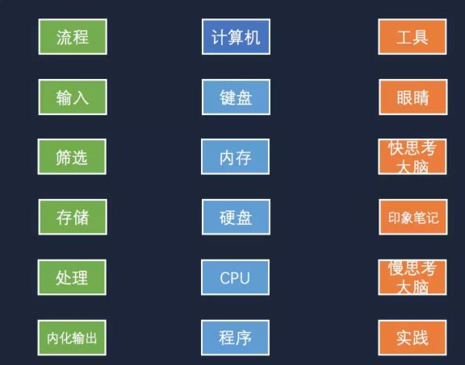
一.输入
基于我们的目的和人生方向，有意识的主动的去收集相关信息。如看书、上网、阅读、旅游等等，和普通人一样的输入方式，唯一不同的是我们是有目的，有方向性的。
二.筛选
在输入质量上，付费的要比免费的好，听高人前辈指导要比自己瞎折腾效率高，因为付费和高人都是有人帮我们进行了筛选。同时自己也要有意识的去选择一些质量高的渠道和靠谱的人，也可以根据这些权威相关的，也是一种快思考（参考《思考的快与慢》）。（要和我一起组队么？）
三.存储
大脑的容量有限，年纪越大越容易忘事，利用印象笔记、有道为知等做为人的外挂硬盘，在有需要的时候，随时通过大脑调用，因为云笔记是跨电脑、手机、网页的，随想随用，在记忆方面真比大脑好使。后面我再讲讲如何建立分类分标签管理这些细节。
四.处理
我们看了那么多道理却过不好这一生，就是因为光输入了没消化、更没实践。这一步拦住了多少人，我看过无数的人从学生阶段就开始收集知识（比如我），但是到现在还是碌碌无为，就是因为光收集没处理。看过的书，去过的地方再多，到头来只会说：啊~！这好看，NB! 处理就是不断组合、分析、优化、去伪存真、逼近真理的过程，比如5why思考，比如边教边学的费曼学习法都是处理。
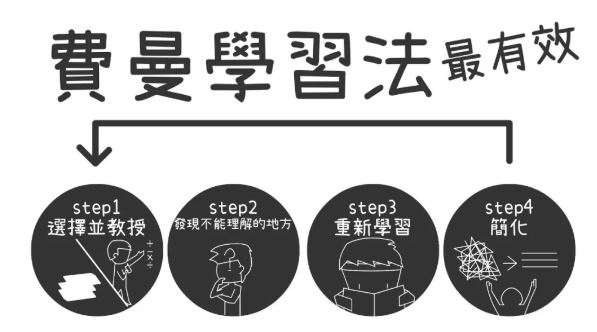
五.实践
把我们所学到的应用于生活，在应用过程中因为环境的复杂，我们新学的知识与旧的知识会不断的碰撞，相信自己，我们每一次新的实践都是在经历我们想过的理想的生活。知行合一，就是内化。
三.利用效率工具，会让你搭建知识体系更快
- 健康的身体是最好的工具：因为大脑、眼睛、行动所依赖的身体都是我们的。
- 存储、整理、写作工具：印象笔记、有道笔记、为知笔记等。
- 思维导图工具：xmind，mindmanager,processon等组织你的思维。
- 教学分享工具：微信群、公众号、简书、知乎、行业网站。
这样看来，工具是不是最简单的，只要你想清楚后（明道、优法）工具反而是最容易上手的了。
四
我的首个个人知识体系怎么做？在大家都是摸石头过河的情况下，最好的方法就是小步快跑，快速迭代。以下是我整理出来的第一个知识结构的版本：
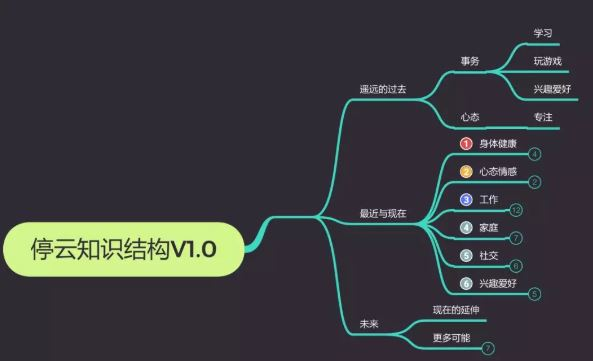
通过加我好友，大家相互交流获得的思维导图的折叠内容。根据知识结构，再梳理印象笔记目录与标签：
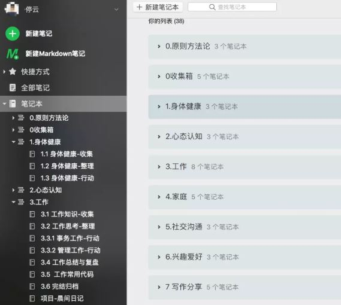
接下来就是不断地往里面填内容，改结构、行动、PDCA迭代了！